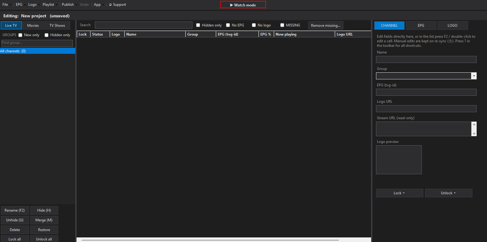

::
Playlist editor
Rename, reorder, regroup, hide and lock channels while preserving your changes across provider refreshes.
A free, privacy-first Windows app for organizing M3U and Xtream playlists, matching EPG data, managing logos, publishing updates and watching Live TV, movies and series.
Windows 10/11 x64 · 104 MB installer · No .NET installation required

PlaylistForge keeps editing, EPG, publishing and playback together without sending your playlist credentials to a hosted editor.
Rename, reorder, regroup, hide and lock channels while preserving your changes across provider refreshes.
Import XMLTV guides, auto-match channels, preview uncertain results and keep now/next programme data close by.
Switch between saved projects, browse channel groups and play Live TV directly with a television-style OSD.
Separate poster libraries, seasons, episode history, seek controls, audio tracks and integrated subtitle search.
Refresh large provider lists without losing locked edits, hidden groups or carefully arranged channel order.
Publish through your Dropbox and GitHub credentials. PlaylistForge itself does not operate a credential broker.
No PlaylistForge account. The app has no hosted login or telemetry service.
Encrypted local settings. Saved credentials are protected with Windows DPAPI for the current user.
Your providers. Network requests go only to sources and optional services you configure.
Get PlaylistForge-Setup.exe from GitHub Releases.
No admin rights needed. Installs to your user profile and adds Start Menu / desktop shortcuts.
Windows SmartScreen may warn because this public beta is not code-signed yet.
5B5A870D899EA1DCC4895E3D42D4B5BBC63C7A717A4682356AFA131F8F3C039BThis build is ready for hands-on testing, but it is still a beta. Please report reproducible bugs without posting playlist URLs, usernames, passwords or API keys.